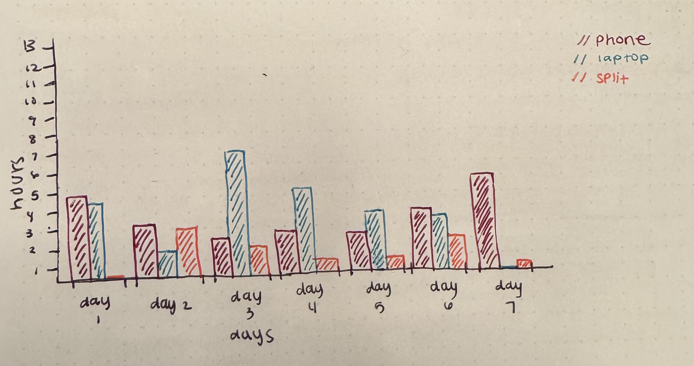
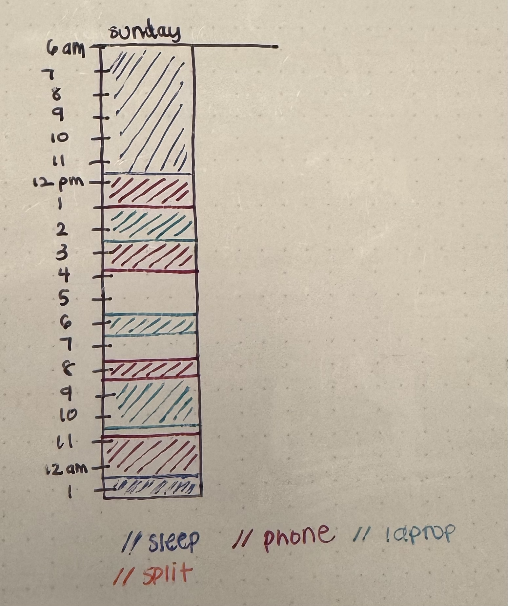

Process and Iteration

My first idea was to make a map of my purchases, but after havimg already done a map, I wanted to explore a new medium so I changed my mind and decided to do screen time instead since this is something I struggle with
After deciding on screentime I first thought of doing a bar graph to show hours spent on each screen, but I wanted to show it in more detail than the stats that my phone could give me
Finally I landed On the current medium as demonstrated here